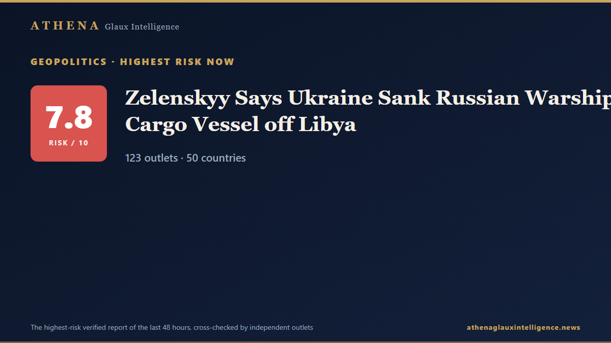
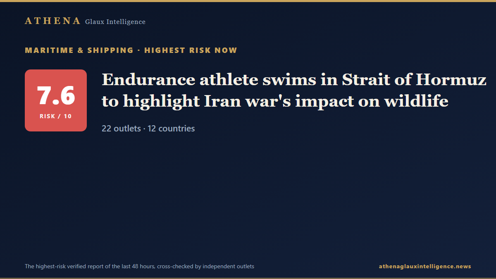
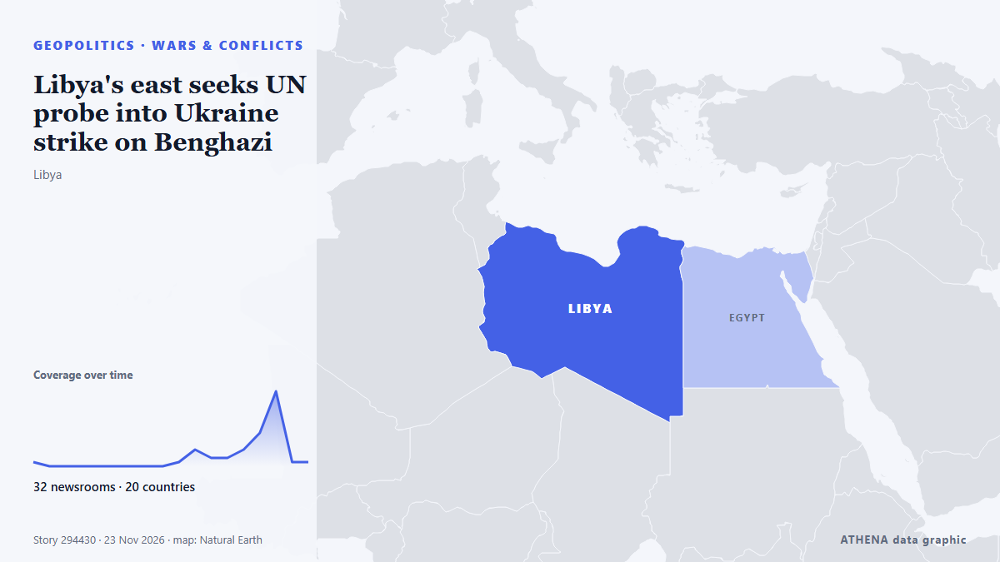

Risk 7.8Elevated
ATHENA Glaux Intelligence — Global news intelligence — every number explained
Geopolitics
All geopolitics >Highest risk now

Rising riskRisk up in the last 24 hours
Maritime & shipping
Maritime desk >Highest risk now
Risk 7.6Elevated
Endurance athlete swims in Strait of Hormuz to highlight Iran war's impact on wildlife
Read the evidence ›
Watch listChokepoints, ports and other shipping reports
- Strait of HormuzDisruptedattack / strike · risk 7.6 · 22 newsrooms (72 h)
- Bab el-Mandeb / Red SeaDisruptedattack / strike · risk 7.8 · 125 newsrooms (72 h)
- Danish Straits / BalticDisruptedattack / strike · risk 7.8 · 125 newsrooms (72 h)
Every headline, checked across countries.
ATHENA Glaux reads 632 news outlets worldwide. A story becomes a verified event only when independent outlets report it. Each event shows who was first and a risk score with its reasons.
1,410events in 24 hours
632outlets followed
35minutes between updates
Earthquake or flood near you this week?
Type your town and see the earthquakes, floods, storms and official warnings near it, with a 72-hour emergency kit checklist. Free, no sign-up, and your place stays on your device.
Reports drift in from independent outlets - when two meet on the same story, it becomes a verified event.
How ATHENA checks a story
- CollectReports arrive from independent outlets in many countries.
- MatchWhen two outlets meet on the same story, it becomes a verified event.
- ExplainEach event shows who was first, how far it spread and why the risk is what it is.
Global risk outlook
Weekly and monthly reviews: the highest-risk events, the trends by domain and region, and what to watch next.
Read the outlook ›Daily briefing
The ten most important world events of the day, the rising risks and the new events, with every number explained.
Open today's briefing ›
GeopoliticsLibya's east seeks UN probe into Ukraine strike on Benghazi
Authorities in Libya's east have called for a UN investigation into claims that Ukrainian forces were present in the west before Sunday's attack in Benghazi. from The New Arab
6.1Importance
5.5Risk · elevated
88%Confidence
Technology & Cyber
South Korea vows to stabilise stock market after KOSPI drops 5%
SEJONG: South Korea reiterated plans on Monday to stabilise its stock market if needed, as the KOSPI plummeted 5% and Finance Minister Lee Hyoung-il projected solid economic growth next year. from Business Recorder
Geopolitics
Lee names new FM, 3 other ministers, spy chief
SEOUL, Nov. 23 (Yonhap) -- President Lee Jae Myung on Monday named a presidentia... from Yonhap (English)
Sponsored
Cybernetics and Artificial Intelligence Lab Welcome to the Cybernetics and Artificial Intelligence Laboratory, established at the Department of Business Administration of the National and Kapodistrian University of Athens. The lab is headed by Professor Dimitrios Thomakos. The lab aims to do research that can be published in top venues. Our research uses tools and methods of Artificial Intelligence, and lies in the following areas: - Forecasting - Decision making - Cyber security - Finance We are always looking forward to collaborating with exceptional students!
Learn more – Cybernetics and Artificial Intelligence LabShips at the world's chokepoints now
Live AIS counts. Tap or hover a bar for the detail.
Latest reports
Historic: Hungarian PM Magyar to visit Ukraine’s Transcarpathia region
Zelensky calls for four-way talks with Russia ‘as soon as possible’
Belgian PM De Wever sets December 31 deadline for budget talks
Virginia, Oregon sue Musk's SpaceX over Grok AI's creation of child sexual abuse images and videos
Over 450 German schools receive bomb threats
NATO believes Russia is ready to launch nuclear-armed satellite, German media say
Cold weather threatens Europe's already strained gas reserves
Three pedestrians killed on Irish roads since Friday as man (40s) dies after being struck by car in Donegal
Economy & Markets
Israeli attacks on medics in occupied West Bank surge by 350%: Rights group
Physicians for Human Rights Israel says medics face 'dangerous escalation' in violence from soldiers and settlers. from Al Jazeera English
Trade & Industry
ICE arrests 2 at Seattle airport in 'chilling' scenes — governor
Washington's governor has denounced the arrests made by ICE officers at Seattle's airport, calling the incident "horrific." from DW English
Geopolitics
US Intelligence Chief Says Putin Is 'Not America's Friend In Ukraine'
Trump’s description of Putin as a friend during the APEC summit drew criticism from European allies of Ukraine. from The Straits Times
Geopolitics, Politics & Security
More ›Wars & conflicts
Gaza turned into ‘toxic wasteland’ by Israel’s war, says new report
The new report examines the devastating environmental impacts of Israel’s attacks on the Palestinian strip. from TheJournal.ie
- Diplomacy & summits
India announces Rs 15,000 crore for flood-hit Nepal, PM Balendra Shah hails ties 'as firm as Himalayas'
- Wars & conflicts
Poland confirms three objects that struck its territory were all Russian missiles
- Wars & conflicts
Estonia to close border with Russia for at least six months
- Diplomacy & summits
Kenya and DR Congo agree to restore diplomatic ties after tensions over conflict
Economics, Finance & Markets
More ›Crypto & digital assets
Binance resumes withdrawals after $6bn crypto hack
An on-chain tally puts the suspected Binance drain at $5.57 billion across three blockchains, as Tether and Circle froze $1.8 billion. from Decrypt
- Banking & credit
Israeli army raids Palestinian refugee camp, launches arrest campaign in occupied West Bank
- Crypto & digital assets
Trump to welcome investors at gala for his plunging meme coin
- Inflation & interest rates
Shoppers rush to buy gold
- Jobs & wages
Saudi Arabia to Saudise 50% of jobs in 17 financial professions from May 2027
Trade, Industry & Infrastructure
More ›Tariffs & export controls
Paedophile locked up 15 years after sexually assaulting boy
The victim said 'the burden of carrying this case has been so heavy it’s as if my life has been on hold' from MyLondon
- Trade & trade deals
Red Wings trade Dylan Larkin to Canadiens in blockbuster move
- Aviation, rail & road
HT Evening News Brief November 22: Nepal PM's visit; COP31 deadlock, India-New Zealand test and more
- Manufacturing
Lego picks Portugal to build its 8th factory
- Aviation, rail & road
Vietnam Embassy celebrates Vietnamese Culture Day in Phnom Penh
Energy, Resources & Environment
More ›Climate & climate policy
Climate talks collapse in chaotic end to COP31
Countries race to secure COP31 deal after fossil fuel row. from Gulf News
- Electricity & power
Power Supply Situation in Odesa Region Remains Difficult
- Extreme weather & natural disasters
Democrats win largest US House majority since 1992: media
- Climate & climate policy
Scramble to save climate fight after COP collapse
- Electricity & power
Presidential villa suffers water and power cuts, Nigerian leader says
Technology, AI & Cybersecurity
More ›Space & satellites
European-Japanese spacecraft reaches Mercury after eight-year journey, suffers glitch
Mercury, only slightly larger than Earth's Moon, is the least explored of the four planets in the inner solar system, with BepiColombo only the third spacecraft to visit the planet. from The Jerusalem Post
- Space & satellites
Nepal and India sign eight MoUs on cooperation in multiple sectors
- Artificial intelligence
UAE launches mira, AI assistant for government services; available from March 2027
- Artificial intelligence
Ethiopia and Rwanda Seek to Elevate Bilateral Partnership Through Practical Cooperation
- Cybersecurity
Hackers Exploit Cisco Expressway Vulnerability Soon After PoC Release
Business, Companies & Investment
More ›Mergers & acquisitions
CrowdStrike to acquire Zscaler for $43.9 billion
CrowdStrike has agreed to acquire Zscaler in an all-stock deal with an enterprise value of about $43.9 billion. from Help Net Security
- Corporate strategy
Anne O'Connor to 'vigorously' challenge her 'profoundly flawed' removal as HSE CEO
- Startups & innovation
Lilly buys Huntington's startup LoQus23 for up to $725M
- Corporate strategy
Rene Haas to remain CEO of chipmaker Arm through 2033 amid Nvidia top job chatter
- Corporate strategy
Russia's Wildberries CEO Steps Down Days After EU Sanctions, Media Report
Accidents & emergencies
More ›Accidents & emergencies
The 1976 Plane Crash in Greece That Killed All 50 On Board
On November 23, an Olympic Airways flight crashed into a mountainside in northern Greece, killing 46 passengers and four crew members. from to vima
- Accidents & emergencies
Boy and elderly survivor pulled from rubble after Russian attack near Kyiv
- Accidents & emergencies
SBI loses couple’s original property sale deed, asked to pay Rs 2 lakh if it fails to trace
- Accidents & emergencies
Oman road accident: Four killed, 17 injured in bus-truck collision
- Accidents & emergencies
Pedestrian, 60s, dies after hit-and-run in Co Mayo
Three ways to read today
Start with the one that fits your timeVerified events
Ranked by how widely they are reported
- COP31 ends in failure as countries split over fossil fuels, climate finance140 outlets · 62 countriesRisk 3.5
- Netanyahu and Eisenkot parties resume talks to form Israel government160 outlets · 56 countriesRisk 4.7
- Nvidia reinstates Jensen Huang as CEO154 outlets · 51 countriesRisk 4.6
- Ukraine says it sank Russian warship in naval drone attack off Libya109 outlets · 43 countriesRisk 6.7
- Climate deal collapses in chaotic end to COP3175 outlets · 40 countriesRisk 2.2
Assessment Desk
Ask a question and read a reasoned assessment of a leading story, with what would prove it wrong.
Open the Assessment Desk ›Today in numbers
| 19:00 | 805 |
|---|---|
| 20:00 | 379 |
| 21:00 | 208 |
| 22:00 | 169 |
| 23:00 | 237 |
| 00:00 | 310 |
| 01:00 | 243 |
| 02:00 | 284 |
| 03:00 | 303 |
| 04:00 | 544 |
| 05:00 | 507 |
| 06:00 | 494 |
| 07:00 | 508 |
| 08:00 | 608 |
| 09:00 | 872 |
| 10:00 | 404 |
| 11:00 | 155 |
| 12:00 | 443 |
| 13:00 | 503 |
| 14:00 | 583 |
| 15:00 | 401 |
| 16:00 | 423 |
| 17:00 | 447 |
| 18:00 | 417 |
Risk of today's events
Geopolitics93Economy & Markets51Trade & Industry38Energy & Environment37Technology & Cyber31Business29Maritime5
Emerging signals
- Sudden surge · Active nowMerkury
- Sudden surge · Active nowUkrainian-made
- Sudden surge · Active nowEsmaeil Baghaei
- Sudden surge · Active nowPMI
- Sudden surge · Active nowNepal
Official warnings
- M 6.5 - Vanuatu regionM6.5 · USGS ·
- M 5.9 - 238 km SW of Yanglong, ChinaM5.9 · PAGER yellow · USGS ·
- Orange notification for tropical cyclone AKVAN-26. Population affected by Category 1 (120 km/h) wind speeds or higher is 0 (20.826 million in Tropical Storm).Orange · GDACS ·
Stay informed
ATHENA Weekly Risk Picture
The week's biggest geopolitical, economic and shipping risks, cross-checked and scored.
Every Friday at 08:00 Athens time · free · in English
Subscribe freeATHENA on Telegram
News the moment it is published: breaking events at risk 6 or more, an hourly round-up, risk-tracker updates and the daily briefing at 10:00.
Free · posts in English · leave at any time
Join the channelSign-up is handled by beehiiv with double opt-in: nothing you type is sent to ATHENA, and every issue has an unsubscribe link.
Risk trackers
More ›Strait of HormuzRisk 7.610 new this week · down from 38 the week beforeRed Sea shippingRisk 7.131 new this week · down from 46 the week beforeGreece–Turkey relationsRisk 3.55 new this week · down from 10 the week beforeCyprusRisk 5.013 new this week · down from 18 the week beforeSanctions on RussiaRisk 3.311 new this week · down from 16 the week beforeRussia–Ukraine warRisk 7.7221 new this week · down from 284 the week beforeIsrael, Gaza & the West BankRisk 6.769 new this week · down from 86 the week beforeTaiwan StraitRisk 1.510 new this week · down from 18 the week beforeOil & gas pricesRisk 2.928 new this week · down from 53 the week beforeSuez CanalRisk 0.01 new this week · down from 2 the week beforeTurkish StraitsRisk 0.00 new this weekPanama CanalRisk 0.00 new this weekShadow fleetRisk 0.01 new this week · down from 4 the week beforeBlack Sea shippingRisk 0.02 new this week · down from 8 the week beforeCentral banks & interest ratesRisk 4.145 new this week · about the same as the week beforeGreek economyRisk 2.88 new this week · about the same as the week beforeEastern Mediterranean energyRisk 0.01 new this week · down from 5 the week beforeBalkansRisk 3.014 new this week · down from 24 the week beforeMediterranean migrationRisk 0.01 new this week · down from 4 the week before
Global risk outlook — week 48, 2026 (23–29 Nov) ›
Around the world
Southeast AsiaVietnam Embassy celebrates Vietnamese Culture Day in Phnom Penh
57 events
Middle East & North AfricaFire at power station in Iraq's Basra kills at least 4, injures 35
57 events
North AmericaNvidia reinstates Jensen Huang as CEO
54 events
South AsiaIndonesia searches for 34 missing workers after candy factory fire
53 events
Russia & EurasiaZelensky says Crimean Bridge strikes ‘fair response’ as he meets UK’s Streeting
43 events
Sub-Saharan AfricaCOP31 ends in failure as countries split over fossil fuels, climate finance
42 events
East AsiaLee names new FM, 3 other ministers, spy chief
40 events
Latin America & CaribbeanHouthis claim attack on Saudi oil refinery
25 events